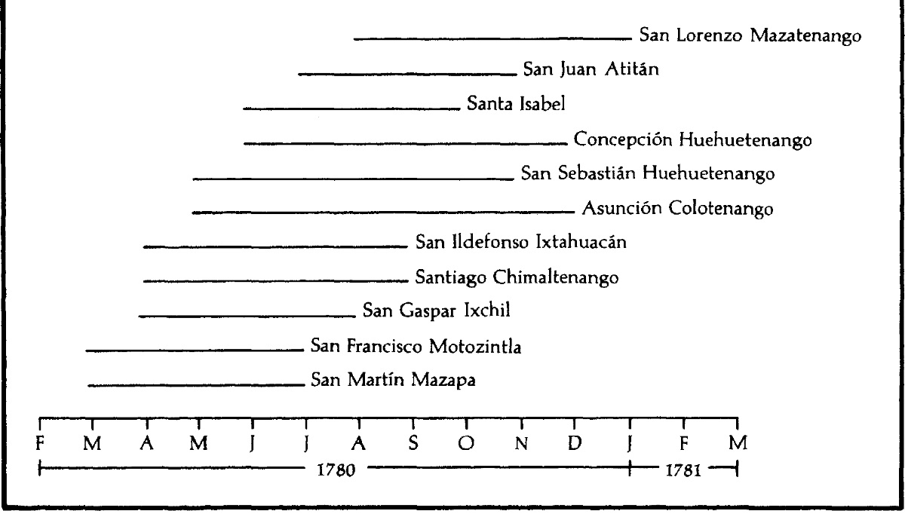

Enfermedad y Crisis Demográfica
La introducción de enfermedades del Viejo Mundo por los conquistadores españoles tuvo un impacto devastador en la población nativa inmunológicamente vulnerable de Guatemala. Enfermedades como la viruela, el sarampión y el tifus causaron una mortalidad catastrófica entre los indígenas.
"Desde la sumersión del puente terrestre de Bering hace unos diez mil años hasta la llegada de los europeos a finales del siglo XV, los habitantes del Nuevo Mundo vivieron prácticamente aislados de los del Viejo. Este largo período de aislamiento debilitó considerablemente la resistencia de los amerindios a la mayoría de las principales enfermedades de la humanidad." (Lovell, Conquista y Supervivencia en la Guatemala Colonial, 147-148)
La población de las tierras altas de Cuchumatán disminuyó en más del 90 por ciento entre 1520 y 1680, pasando de posiblemente 260,000 a 16,000. Este colapso demográfico tuvo consecuencias de gran alcance para la sociedad y la economía colonial.
Cronología y ocurrencia de la viruela en las tierras altas de los Cuchumatanes, de marzo de 1780 a enero de 1781
